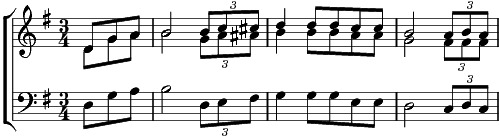

1. J'ai mis mon cœur à la grand'voile
et suis parti ; bf.
Le vent chantait dans les étoiles
et suis parti, bf.
Au bout du monde est une escale,
J’y descendrai pour mon bonheur ;
Et le soleil au matin pâle
M’y recevra comme un seigneur.
Refrain: Les chemins de la mer
conduiront mon bateau.
Adieu mon père adieu ma mère,
Je ne reviendrai pas de sitôt,
Les chemins de la mer
conduiront mon bateau.
Adieu, mon père adieu, ma mère,
adieu, vous tous là-haut !
Oh !
2. Le ciel est bleu dans les cordages
et vient midi ; bf.
Le jour se noie dans mon sillage
et vient la nuit, bf.
Au bout du monde est une escale,
J’y descendrai pour mon bonheur ;
Et le soleil au matin pâle
M’y recevra comme un seigneur.
Refrain